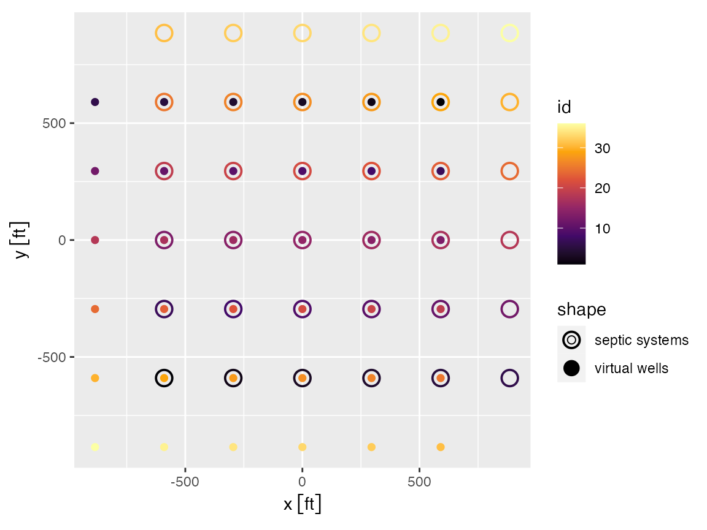
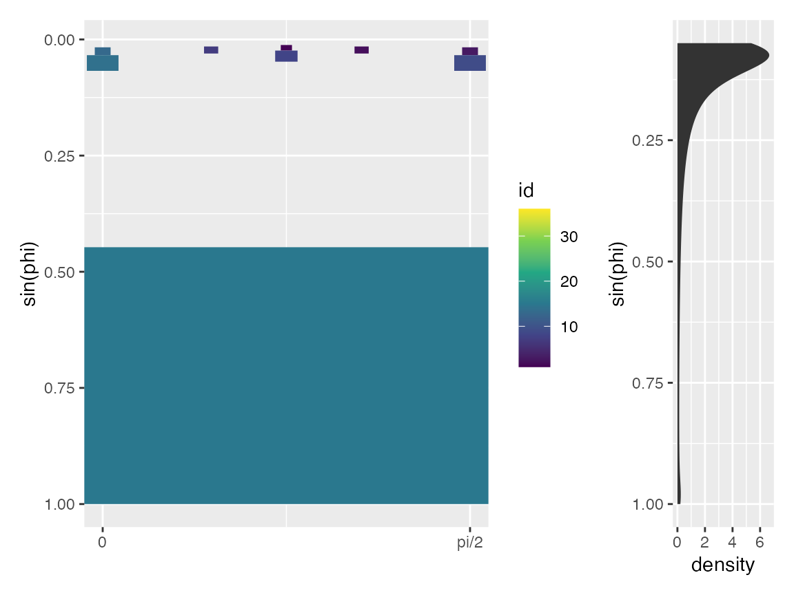

groundwater-model.Rmd
library(nitratesgame)
#> Loading required package: rlang
library(dplyr)
library(tidyr)
library(purrr)
library(units)
library(sf)
library(ggforce)
library(patchwork)
# getwd()First we set some basic parameters for the scenario including:
# Get area of hh withdrawal
hh_annual <- set_units(76, "gallon/day") %>% # from USGS water data
set_units("ft^3/year") * 4
precip_annual <- set_units(1070, "mm / year") #%>%
seepage_fraction <- 0.4
seepage_annual <- precip_annual * seepage_fraction
area_of_withdrawal <- hh_annual / seepage_annual
rs <- sqrt(area_of_withdrawal / pi) / 3 # CALIBRATED
density <- set_units(0.5, "1/acre")Now let’s assume the top of the screened portion of the well is 10 ft below the water table surface. We further assume that the vertical velocity in the aquifer is the seepage rate divided by porosity, and that any contamination is sufficiently diluted after 5 years. This means that we can set the bottom of the well at z2.
z1 <- set_units(10,"ft")
z2 <- (seepage_annual / 0.4 * set_units(5, "year")) %>%
set_units("ft") # wells are at avg depth of X but assume dilution after 5 yearsNow we need a grid of septic systems. You can create an array of wells yourself or use get_hh_grid. The inputs to get_hh_grid are density and area as units objects.
area <- set_units(64, "acre")
hh_array <- get_hh_grid(density, area)
hh_array$id <- 1:nrow(hh_array) # supply an idThe groundwater model predicts the probability that a point source will contaminate at least one well in an array of wells. However, in this case we are interested in the probability that an array of septic fields (considered point sources) will lead to contamination in a single well. This problem can be modeled using get_intersection_probability by considering the well as a point source and the septic systems as “virtual wells” such that the spatial relationship between a well and septic system (point source) is the same as the relationship between the virtual well and well (now considered the point source). The function get_septic_well_array does this job for us. See the ?get_septic_well_array for details.
virtual_well_array <- get_septic_well_array(hh_array, "septic", z_range = c(z1, z2), rs = rs)Here you can see that the virtual well array is identical to the septic array but rotated by 180 degrees.
library(ggplot2)
library(ggforce) # needed to plot axes using units objects
ggplot(mapping = aes(x, y, color = id)) +
geom_point(data = hh_array, aes(shape = "septic systems"), size = 4, stroke = 1) +
geom_point(data = virtual_well_array, aes(shape = "virtual wells"), size = 2) +
scale_shape_manual(values = c(1, 16)) +
scale_color_viridis_c(option = "B") + coord_equal()
The array virtual_well_array contains sf geometries for each of the wells in \(\theta-\phi\) space. We can plot these geometries projected onto the z-axis such that it appears as viewed from the point source at the land surface. To do so we can take \(z_{projected}=\sin(\phi)\) and plot using geom_rect from ggplot. We zoom in only on \(\theta \in [0,pi/2]\).
p_wells <- ggplot(virtual_well_array) +
geom_rect(aes(xmin = theta1, xmax = theta2, ymin = sin(phi1), ymax = sin(phi2), fill = id), color = NA, alpha = 1) +
scale_fill_viridis_c("id") +
scale_y_reverse("sin(phi)") +
scale_x_continuous(breaks = c(0, pi/2), labels = c("0", "pi/2")) +
coord_cartesian(xlim = c(0, pi/2))
p_phi <- ggplot(data.frame(alpha = seq(0,50,by=.1)) %>% dplyr::mutate(phi = atan(1/alpha))) +
stat_density(aes(sin(phi))) +
scale_x_reverse("sin(phi)") +
coord_flip()
p_wells + p_phi + patchwork::plot_layout(widths=c(0.8,0.2))
Now get the probability of contamination of the well, using the virtual well array.
gw_example <- virtual_well_array %>%
get_intersection_probability(theta_range = c(0,pi/2), alpha_range = c(0, 50),
self_treat = FALSE, show_progress = FALSE)
gw_example
#> [1] NaN